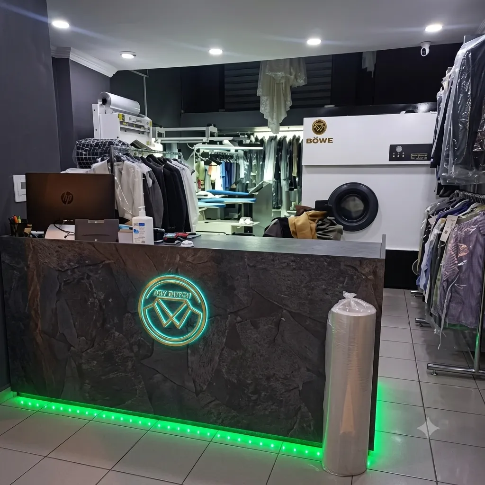
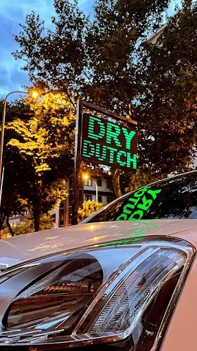

Dükkanımızın modern altyapısı ve yenilikçi teknolojileriyle kıyafetleriniz emin ellerde.
Biz Kimiz? Keşfedin
Kapımızdan içeri girdiğiniz ilk andan itibaren, karşılama alanımızın sıcaklığı ve profesyonelliğiyle tanışırsınız. Giysilerinizi sizden teslim alırken sadece bir işleme kaydetmiyor; kumaş türünü, özel leke durumlarını ve üretici talimatlarını titizlikle analiz ediyoruz.
Ziyaretiniz süresince konforunuzu ön planda tutan karşılama alanımız, dijital teslimat ve takip sistemlerimizin ilk entegrasyon noktasıdır. Kıyafetleriniz buradaki muayeneden sonra tam donanımlı tesisimize aktarılır.
Yıllık Sektör Tecrübesi
Temizlenen Hassas Giysi
Müşteri Memnuniyeti
Zararlı Kimyasal Atık

Dükkanımızın arka planında yer alan, yüksek hijyen standartlarına sahip profesyonel iç mekanımızda giysileriniz için adeta bir laboratuvar titizliğiyle çalışıyoruz. Son teknoloji İtalyan pres sistemleri, bilgisayar kontrollü organik temizleme üniteleri ve hassas el ütüsü istasyonlarımız bu alanda konumlanmıştır.
Her kumaş türü (ipek, kaşmir, deri, narin abiyeler) iç mekanımızdaki bağımsız özel bölmelerde işleme alınır. This sayede çapraz bulaşma riski tamamen ortadan kaldırılır... ve giysilerinizin lif yapısı ilk günkü formunda korunur.
Klasik kuru temizleme mantığını yıkarak tekstil ürünlerinize bir gençlik aşısı uyguluyoruz.
Çevreye ve insan sağlığına tamamen zararsız olan, doğada çözünebilen GreenEarth silikon teknolojisini tercih ediyoruz.
Sıradan temizleyicilerin pes ettiği en zorlu (yağ, şarap, kahve, mürekkep) lekeleri kumaşa zarar vermeden güvenle çıkarıyoruz.
Zamanınız olmadığında bir telefonla giysilerinizi adresinizden özel askılı araçlarımızla teslim alıyor ve geri getiriyoruz.
Her bir parça, dükkanımızda en yüksek kalite standartlarını içeren 4 aşamalı bir döngüden geçer.
Karşılama alanında lekeler, düğmeler ve dikişler tek tek incelenerek koruma planı çıkarılır.
Kumaşın lif yapısını besleyen, renkleri canlandıran özel organik solüsyonlarla yıkama yapılır.
Vakumlu ve üflemeli profesyonel ütü masalarında, kumaşta parlama yapmadan orijinal form verilir.
Son kalite kontrolden geçen giysiler toz almayan antistatik özel ambalajlarla askılanarak teslime hazır hale getirilir.
Gerçek kullanıcıların dükkanımız ve hizmet kalitemiz hakkında yaptığı değerli geri bildirimler.
"Tasarım tasarımcı abiyemi kahve lekesi yüzünden tamamen gözden çıkarmıştım. Buradaki iç mekan ekibi ve leke uzmanları elbiseyi ilk günkü haline getirdi. Gerçek bir mucize!"
"Karşılama alanındaki personelin nezaketinden tutun, takım elbiselerimin tam vaktinde tertemiz ve sıfır potlukla teslim edilmesine kadar her şey harika. Başka yere gitmem."
Kuru temizleme süreçlerimiz, kullandığımız teknolojiler ve merak ettiğiniz diğer detaylar.
Hayır, kesinlikle bırakmaz. Geleneksel kuru temizlemede kullanılan petrol türevi kimyasallar ağır kokulara sebep olurken, bizim dükkanımızda kullandığımız GreenEarth silikon bazlı solventler tamamen kokusuzdur ve anti-alerjiktir.
Kabul alanımızda bu tarz narin giysiler özel koruma filelerine alınır veya gerekirse iç mekanımızdaki ustalarımız tarafından tamamen el işçiliğiyle lokal olarak temizlenir. Sıfır zarar garantisi uygulamaktayız.
Standart kuru temizleme ve ütüleme süreçlerimiz 24 saat içerisinde tamamlanmaktadır. Çok acil durumlar için karşılama alanımızda belirtebileceğiniz "Express Hizmet" seçeneğimiz mevcuttur.